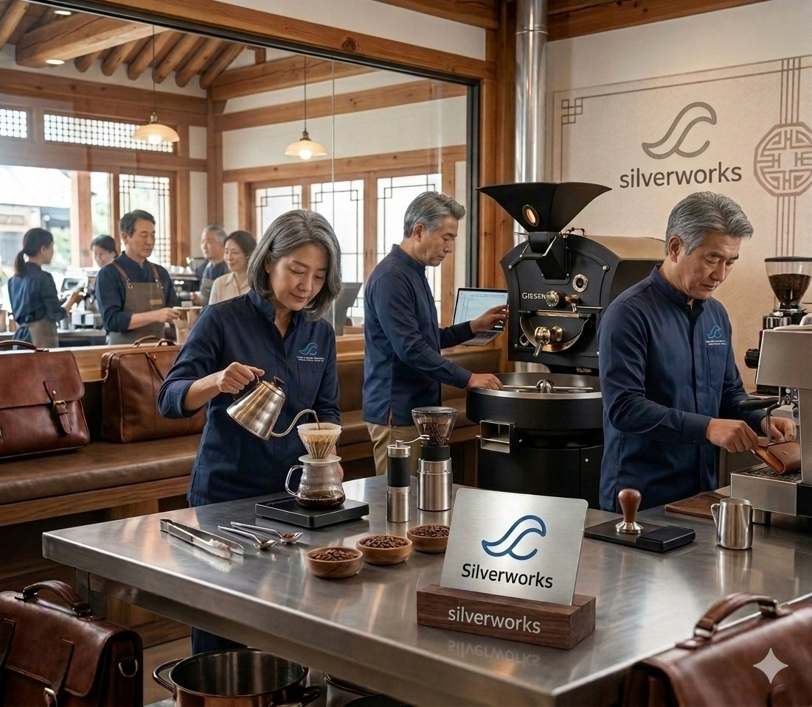

주휴수당·퇴직금 폭탄과 무단 노 노쇼에 힘드셨나요?
실버웍스는 사장님의 불필요한 열람권을 삭제하고, 오프라인 검증을 통과한 시니어 베테랑을 선착순 완전 자동 매칭하는 스마트 직업정보 매개 인프라입니다.

하루 3시간 피크타임, 원하는 직무와 인원만 지정하여 등록하면 인프라가 작동합니다. 고용노동부 최저임금 기준을 원천 동기화하여 완벽한 법적 무결성을 보장합니다.
오프라인 국민체력 100 검증 등급과 12가지 정밀 질문지 데이터가 탑재된 이력서가 자동 가공됩니다. 앱에서 공고를 자율 열람 후 선착순 지원하는 구조입니다.
근로자 퇴근 인증 시 프리랜서 3.3% 원천세가 자동 공제된 포인트가 동적 지급됩니다. 매장은 월말에 수수료율(회원 5% / 비회원 10%)이 가산된 일괄 후불 청구서에 따라 사업용 계좌로 정산합니다.
1. 본 플랫폼은 직업안정법 제23조에 의거하여 구인·구직 정보의 효율적 연계를 목적으로 가동되는 정식 인터넷 직업정보제공 서비스 인프라입니다.
2. 구인자는 직업정보제공 전산망에 구인 일시, 직무, 인원 등의 내용을 성실히 기재하여야 하며, 입력된 급여 단가가 당해 연도 고용노동부 고시 최저임금에 미달하거나 유흥·유해 업종 코드로 판별될 경우 공고 기재 및 저장이 원천 차단됩니다.
3. 실버웍스는 구인자와 구직자 상호 간의 정보를 기술적으로 매개하는 IT 시스템만을 제공하며, 근로기준법상 고용 관계 성립에 따른 각종 인사·산재 책임은 정보 이용의 주체인 해당 사업장 매장 고용주(구인자)에게 전적으로 귀속됩니다.